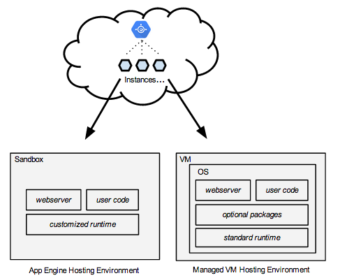

Managed VMs and custom runtimes on Google Cloud Platform are now available in beta. You can run Dart as a custom runtime on Managed VMs. This means that you can use App Engine to host your Dart application “in the cloud”.
For an overview, watch this short video with Søren Gjesse.
App Engine lets you build and run applications on Google’s infrastructure, providing high performance, load balancing, security, and other benefits. Previously, App Engine ran all applications in a secure, sandboxed environment and supported four programming languages: Python, Java, Go, and PHP.
Now, in addition to the sandboxed hosting environment, App Engine supports Managed VMs for hosting your apps. This VM-based hosting environment offers more flexibility, and provides more CPU and memory options. In addition, it allows applications to be written in any programming language, including Dart.

For general information about App Engine’s Managed VMs, refer to Managed VMs.
If you are eager to start playing with this feature, knowing that it will change and mature in future releases, use the following links:
To participate in the discussion on running Dart on Managed VMs, and to stay informed with news and announcements, sign up for cloud@dartlang.org.